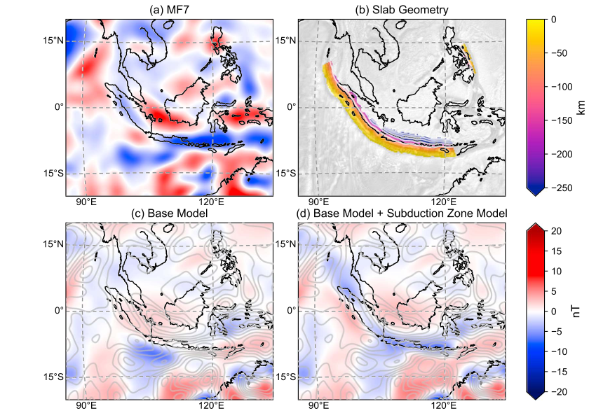
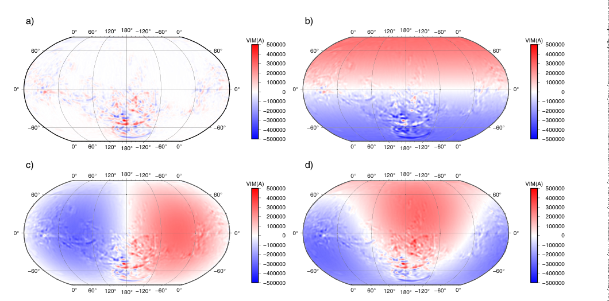
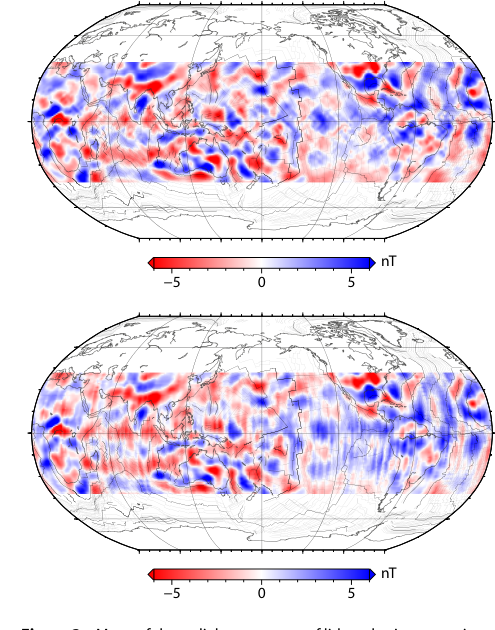
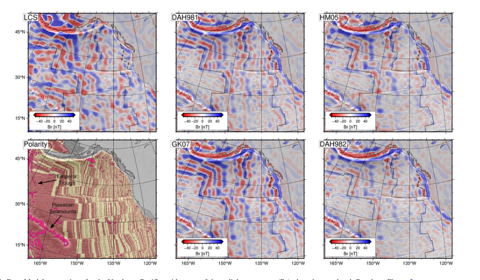

Most subduction zones show up as long-wavelength magnetic anomalies at satellite altitude, even though the short-wavelength detail ships and aircraft record is far too weak to survive the climb to orbit. Williams & Gubbins (2019, JGR) modelled 13 subduction zones as vertically integrated magnetizations (increasing, level, or decreasing away from the trench) to test whether the signal comes from a magnetized mantle wedge, a uniform overlying layer, or the downgoing slab itself. The maps below, for the Sunda arc, compare the observed satellite field against predictions from a global magnetization model with and without the subduction zone model added.

Figure 6, Williams & Gubbins (2019).
Gubbins, Jiang, Williams & Zhang (2022, GRL) took the same vector-harmonic decomposition method to another planet entirely. Mars' crust is magnetized roughly ten times more strongly than Earth's, and only part of that signal is visible in orbital magnetic field models. The rest is mathematically invisible from orbit, no matter how good the data gets. The maps below separate that visible signal from three different possible contributions of a uniformly magnetized shell, showing how differently oriented ancient dynamo fields would leave the same present-day orbital signature.

Figure 1, Gubbins et al. (2022).
Williams, Gubbins, Livermore & Jiang (2025, Earth and Planetary Physics) got early access to data from MSS-1, a new Macau-built satellite that began mapping Earth's magnetic field in November 2023, and ran the first independent evaluation of its lithospheric field maps. The two globes below compare a year of MSS-1 data against the established Swarm-A mission: the same ocean and continental structure comes through in both, a reassuring sign for a brand-new instrument, though each satellite's orbit geometry leaves its own faint track-line fabric on the map.

Figure 3, Williams et al. (2025).
Williams, Gubbins, Whittaker & Seton (2025, JGR) draws the earlier work together: using CHAMP and Swarm satellite data to map the magnetization of the entire ocean floor, and testing it against models built from plate tectonic reconstructions. The maps below, for the northeast Pacific, show the classic magnetic striping of the Emperor Trough and Hawaiian Seamounts region reproduced by several magnetization models, benchmarked against the satellite-derived field and the region's known reversal chronology (bottom left). Where the observed and modelled stripes disagree by hundreds of kilometres, that is itself a signal: a location where the underlying plate reconstruction most likely needs revising.

Figure 5, Williams et al. (2025).